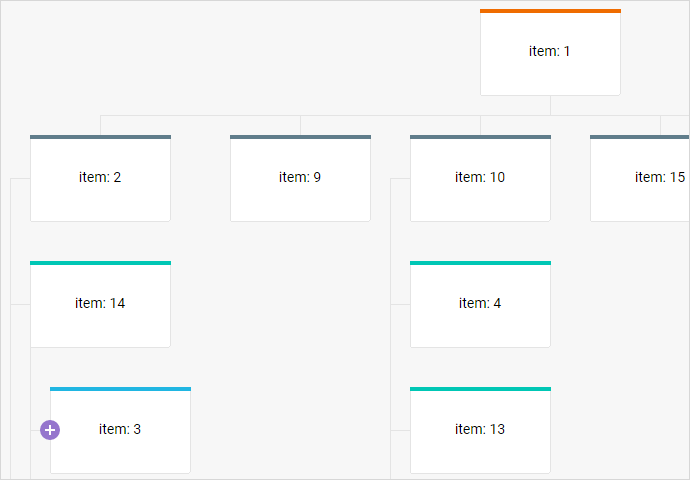

The Org Chart has specific types of shapes. You will find them together with the connectors types available for the Org Chart in this article. The article also covers such issues as creating a new type of shapes and adding the Diagram shapes into Org Chart.
There are three types of shapes typical of the Org Chart:
The shapes of Org Chart are configured automatically. You can set the following options for a shape of an org chart:
var data = [
// shapes
{
"id": "1",
"text": "Chairman & CEO",
"title": "Henry Bennett",
"img": "../common/img/avatar-1.png"
},
{
"id": "2",
"text": "QA Lead",
"title": "Emma Lynch",
"img": "../common/img/avatar-2.png",
"parent": "1",
"dir": "vertical"
},
{
"id": "2.1",
"text": "QA",
"title": "Charles Little",
"img": "../common/img/avatar-4.png",
"parent": "2"
}
]
Starting from v3.0, it is also possible to set custom options as for a custom shape of an org chart as for a custom shape of an org chart editor.
var customShapeData = [
{
"id": "1",
"type": "template",
"title": "Milena Hunter",
"post": "Attending physician", "phone": "(124) 622-1256", "email": "mhunter@gmail.com", "img": "../avatar-25.jpg",
"height": 115, "width": 330
}
];
The "post", "phone" and "email" properties are custom.
Overriding of the internal properties of the org chart shape is forbidden as it causes the incorrect work of the org chart and its editor.
For details about interaction between custom properties and the Org Chart Editor, see the Configuring Right Panel article.
You can set a common type for all the shapes of the Org Chart via the defaultShapeType property of the diagram config object:
var diagram = new dhx.Diagram("diagram_container", {
type: "org",
defaultShapeType: "img-card" });
Related sample: Org chart with images - DHTMLX Diagram
This value is applied, if the shape config doesn't contain the "type" property.
The type of child shapes will be the same as the type of the parent shapes.
Use the name of the necessary type as a value of the type attribute inside the shape object, while preparing a data set for loading into the org chart. In the following example all the shapes have the default "card" type, except for the item with the id "1", which has the "img-card" type:
// data to load
var data = [
{
"id": "1",
"text": "Chairman & CEO",
"title": "Henry Bennett",
"type":"img-card", "img": "../common/img/avatar-1.png" },
{
"id": "2",
"text": "Manager",
"title": "Mildred Kim",
},
{
"id": "3",
"text": "Technical Director",
"title": "Jerry Wagner",
}
// more shape objects
]
// initializing an org chart
var diagram = new dhx.Diagram("diagram_container", { type: "org" });
diagram.data.parse(data);
There is a possibility to add nested lists into Org Chart. To form a nested list, you need to define vertical direction of connecting shapes for the parent shape via the attribute dir:"vertical". All the children of this parent will be connected vertically, including the nested ones:

Below you will find a fragment of the code that will help you to get the idea:
var nestedLists = [
{ "id": 1, "text": "item: 1" },
{ "id": 2, "text": "item: 2", "parent": 1, "dir": "vertical" },
{ "id": 3, "text": "item: 3", "parent": 14 },
{ "id": 7, "text": "item: 7", "parent": 14 },
{ "id": 14, "text": "item: 14", "parent": 2},
{ "id": 19, "text": "item: 19", "parent": 2}
];
var diagram = new dhx.Diagram("diagram_container", { type: "org" });
diagram.parse(nestedLists);
Related sample: With nested vertical lists - DHTMLX Diagram
For information about creating a new type of shapes for Org Chart, read Configuring Diagram.
The look and the order of connecting shapes is defined by the configuration of the connector objects. You can:
var data = [
// connectors
{ "id": "1-2", "from": "1", "to": "2", "type": "line" },
{ "id": "1-3", "from": "1", "to": "3", "type": "dash" }
]
A connector object can have the following properties:
You can set a common type for all the connectors of the Org Chart via the defaultLinkType property of the diagram config object:
var diagram = new dhx.Diagram("diagram_container", {
type: "org",
defaultLinkType:"line" });
This value is applied, if the connector config doesn't contain the "type" property.
Use the name of the necessary type as a value of the type attribute inside the connector object, while preparing a data set for loading into the org chart.
// data to load
var data = [
// shapes
{ "id": "1", "text": "Chairman & CEO"},
{ "id": "2", "text": "Manager"},
{ "id": "3", "text": "Technical Director"},
// connectors
{ "id": "1-2", "from": "1", "to": "2"},
{ "id": "1-3", "from": "1", "to": "3", "type": "dash" } ]
// initializing an org chart
var diagram = new dhx.Diagram("diagram_container", { type: "org" });
diagram.data.parse(data);
Starting from v2.2, it is possible to create Org Chart mixed with Diagram.
To add the Diagram shapes to Org Chart you have to follow the rules described below:
// data to load
var data = [
// the Diagram shape
{
"id": "1",
"type": "rectangle", "text": "Company",
},
// the Org Chart shape
{
"id": "2",
"type": "card",
"text": "Support Department",
"parent": "1"
},
// more options
];
// initializing an org chart
var diagram = new dhx.Diagram("diagram", {
type: "org",
defaultShapeType: "img-card"
});
diagram.data.parse(data);
Related sample: Mixed - DHTMLX Diagram
Behavior of the Diagram shapes will be the same as behavior of the Org Chart shapes.
It is also possible to create mixed Diagram. See the Creating mixed Diagram article.
Back to top